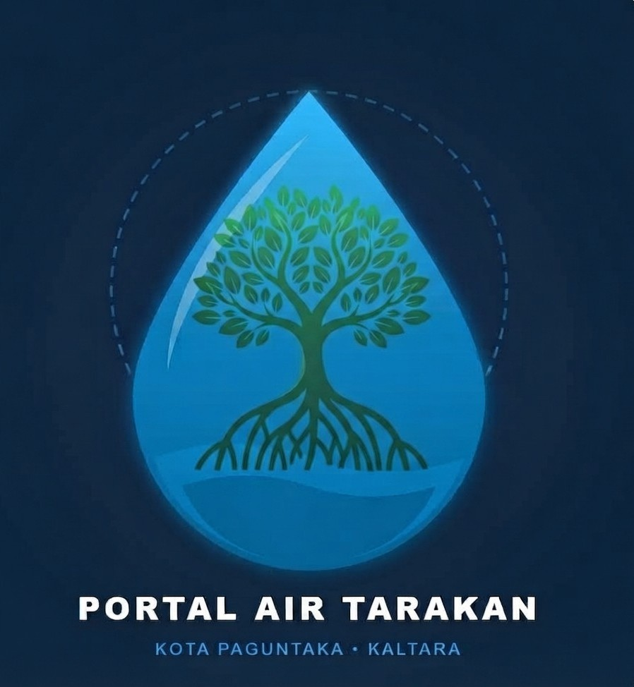
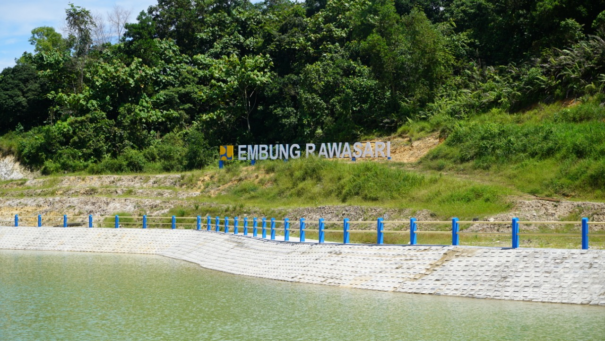
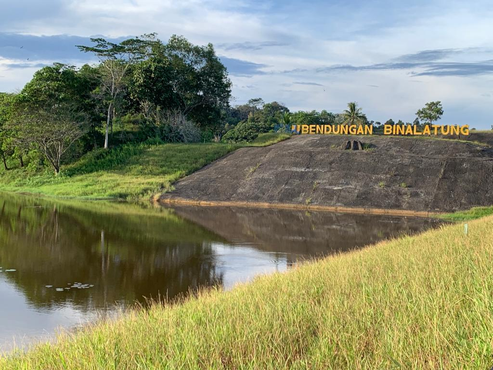
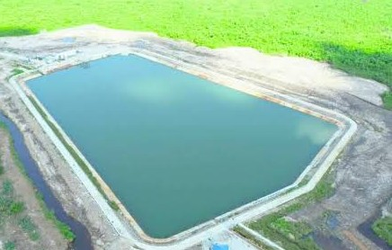

Ringkasan Status Air Kota Tarakan
- Total Titik Pantau: 12 Lokasi
- Status Air Normal: 85% Wilayah
- Laporan Diproses: 4 Pengaduan

PORTAL AIR TARAKANLayanan buat pantau ketersediaan air bersih dan tempat lapor kalau ada gangguan air di Tarakan.
Data ini diupdate berkala sama petugas pengelola air di Tarakan.

Status: Normal / Lancar | Wilayah: Tarakan Tengah
Debit air stabil, air ke rumah warga lancar, nggak ada kendala.
| Parameter | Nilai | Standar | Keterangan |
|---|---|---|---|
| Debit Air | 100 L/detik | ≥ 80 L/detik | Bagus |
| Kekeruhan | 1.2 NTU | Maks 3.0 NTU | Jernih |
| pH | 7.2 | 6.5 - 8.5 | Normal |

Status: Pemeliharaan | Wilayah: Tarakan Timur
Lagi dibersihin pipa filternya, jadi air mungkin agak kecil sementara.
| Parameter | Nilai | Standar | Keterangan |
|---|---|---|---|
| Debit Air | 120 L/detik | ≥ 80 L/detik | Bagus |
| Kekeruhan | 2.8 NTU | Maks 3.0 NTU | Jernih |

Status: Keruh / Gangguan | Wilayah: Tarakan Utara
Airnya keruh gara-gara hujan deras, petugas lagi proses pengendapan.
| Parameter | Nilai | Standar | Keterangan |
|---|---|---|---|
| Volume Tampungan | 1.200.000 m³ | 1.500.000 m³ | Kapasitas 80% |
| Kekeruhan | 6.5 NTU | Maks 3.0 NTU | Keruh, di atas standar |

Status: Normal / Lancar | Wilayah: Tarakan Barat
Debit air stabil, air ke rumah warga lancar, nggak ada kendala.
| Parameter | Nilai | Standar | Keterangan |
|---|---|---|---|
| Volume Tampungan | 800.000 m³ | 1.000.000 m³ | Kapasitas 80% |
| Debit Air | 1.200 L/dtk | Maks 1.500 L/dtk | Stabil, di bawah standar |
Mau lapor pipa bocor, air mati, atau air keruh? Isi form di bawah ini:
Khusus buat petugas/operator air Tarakan: